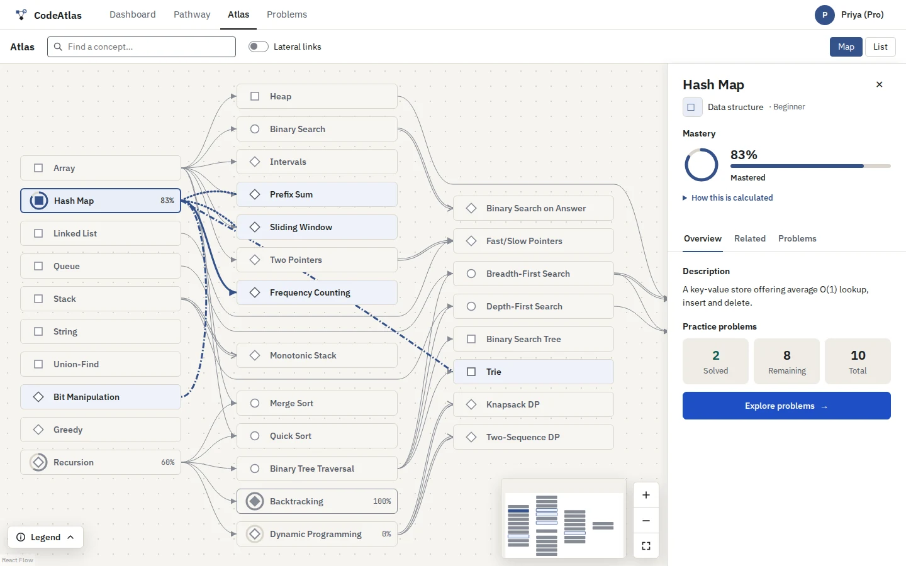
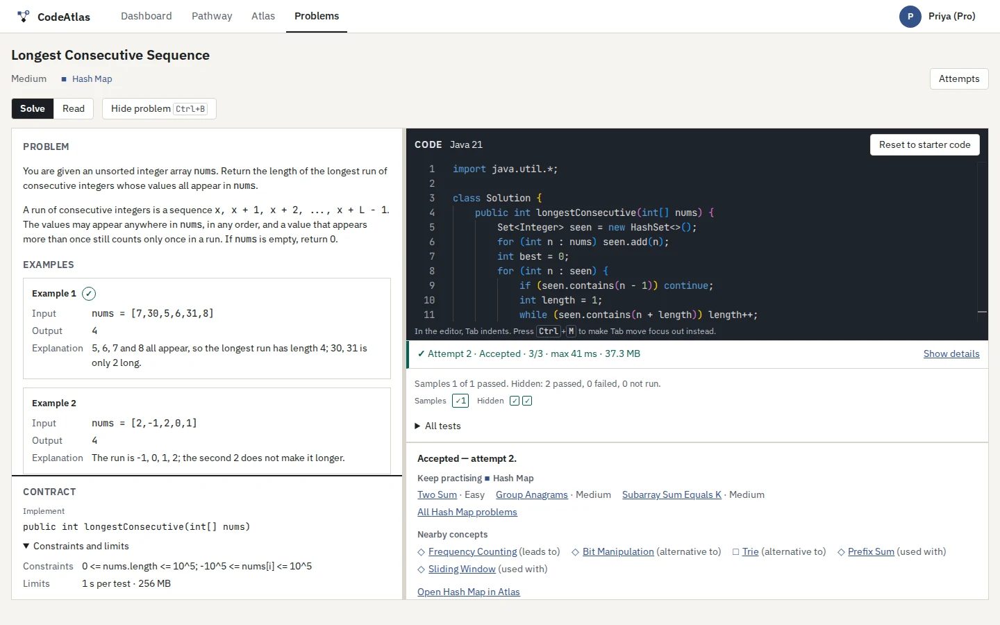
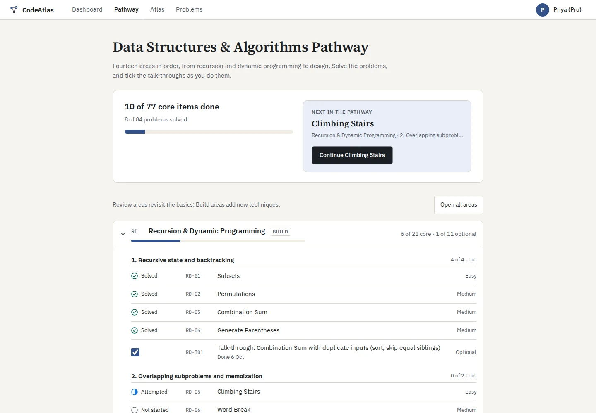

CodeAtlasSee how algorithms connect. Practise with a purpose.
CodeAtlas brings a map of algorithm concepts and a Java coding arena together. Explore a concept, solve a related problem, and see your progress reflected in the map.
How it works
Explore a concept, solve a problem, watch the map change.
-
1 · Explore concepts
See where each idea fits.
The Atlas lays out data structures and techniques as a connected map. Select a concept to see what it builds on, what it leads to, how far you’ve got with it, and which problems practise it. A list view gives you another way to browse.

-
2 · Solve Java problems
Write it, run it, get a clear verdict.
Read the problem, write Java in the coding arena, and run the examples. When you’re ready, submit against hidden tests. A sandboxed judge returns the verdict, then points you to related problems and nearby concepts.

-
3 · See your progress
Know what you’ve learnt, and what’s next.
Accepted solutions build mastery for each concept, weighted by difficulty and relevance. Failed attempts never take it away. The Pathway takes you through 84 Java problems across 14 areas and always shows the next one to work on.

Interested in trying CodeAtlas?
CodeAtlas is in early testing with a small group of learners. Tell me what you’re practising and I’ll get in touch.